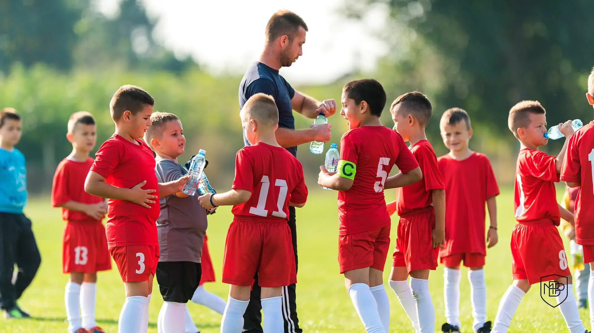

ENTRENADORES

El término "entrenador" hace clara referencia al entrenamiento, fase en la que el deportista se prepara y adecua para disputar una prueba. A principio es lógico pensar que un deportista puede prepararse solo; sin embargo, el entrenamiento exige numerosos conocimientos que van más allá de la propia aptitud y adecuación físicas. Dado que esta preparación puede referirse a una única prueba o a una temporada donde se disputan varias de esas pruebas, en cuyo caso se deberán dosificar las sesiones y plantear distintos tipos de entrenamiento en función a las necesidades, la presencia del entrenador facilita, e incluso asegura, un nivel de competitividad óptimo.
Además de la propia preparación física y técnica, el entrenador puede ejercer una labor psicológica, aportando un apoyo importante al deportista, sobre todo en competiciones de gran desgaste anímico y emocional.
A nivel de equipos, un entrenador tiene, además, de las funciones anteriores, el deber de elegir las estrategias que sus deportistas deberán desarrollar en la siguiente prueba deportiva, a fin de explotar sus mejores virtudes y paliar sus defectos, así como, en su caso, contrarrestar al rival.
Otras funciones, no tan arraigadas a la persona del entrenador, son las de observar y estudiar a los rivales, contratar y descartar deportistas o desarrollar entrenamientos específicos, no orientados a la competición (por ejemplo, recuperación de lesionados). Estas funciones, en muchas ocasiones, las efectúan otros empleados.
En las selecciones nacionales, al entrenador se le llama seleccionador, debido a que selecciona los jugadores que conforman una selección nacional.
jugadores
reservas de canchas
jugadores
estudiante
canchas
entrenadores